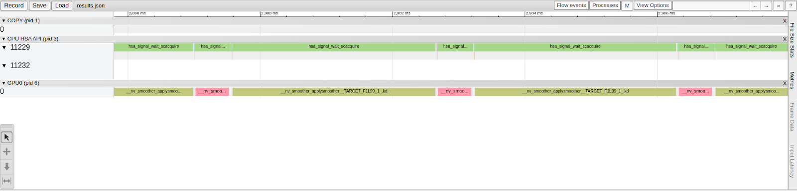

Last Updated: 2021-11-01
In this codelab, you will port a small Fortran application to GPU hardware using OpenMP. You will transition a serial CPU-only mini-application to a portable GPU accelerated application, using OpenMP provided through the AOMP compiler.
The goal of this codelab is to introduce you to using a few basic OpenMP directives and a development practice that can be applied to porting other applications.
If you plan on using the AMD Accelerator Cloud for a portion of this tutorial, you will need to start an interactive session on a compute node to complete this codelab.
The AMD Accelerator Cloud comes with the Slurm job scheduler and a set of compute partitions that provide you access to a variety compute platforms. This section will walk you through how to log in to the AMD Accelerator Cloud and start an interactive session on a compute node with a MI100 GPU.
srun -n1 --partition=MI100 --time=1:00:00 --pty /bin/bash
rocm-smi ======================= ROCm System Management Interface ======================= ================================= Concise Info ================================= GPU Temp AvgPwr SCLK MCLK Fan Perf PwrCap VRAM% GPU% 0 33.0c 35.0W 300Mhz 1200Mhz 255% auto 290.0W 0% 0% 1 33.0c 39.0W 300Mhz 1200Mhz 255% auto 290.0W 0% 0% 2 34.0c 34.0W 300Mhz 1200Mhz 255% auto 290.0W 0% 0% 3 33.0c 39.0W 300Mhz 1200Mhz 255% auto 290.0W 0% 0% 4 33.0c 39.0W 300Mhz 1200Mhz 255% auto 290.0W 0% 0% 5 32.0c 38.0W 300Mhz 1200Mhz 255% auto 290.0W 0% 0% 6 33.0c 34.0W 300Mhz 1200Mhz 255% auto 290.0W 0% 0% 7 31.0c 39.0W 300Mhz 1200Mhz 255% auto 290.0W 0% 0% ================================================================================ ============================= End of ROCm SMI Log ==============================
export HIP_VISIBLE_DEVICES=3
If you plan on using the OCEAN cluster for a portion of this tutorial, you will need to start an interactive session on a compute node to complete this codelab.
The OCEAN cluster comes with the Slurm job scheduler and a set of compute partitions that provide you access to a variety compute platforms. This section will walk you through how to log in to the OCEAN cluster and start an interactive session on a compute node with a GPU.
ssh-keygen -t rsa
gcloud compute os-login ssh-keys add --key-file=${HOME}/.ssh/id_rsa.pub
ssh ocean.waterchange.org
srun -N1 --gres=gpu:1 --partition=v100 --account=amd --qos=amd --pty /bin/bash
The demo application provided for this tutorial performs 2-D smoothing operations using a 3x3 gaussian stencil.
In this section, we introduce the demo application and walk through building and verifying the example. It's important to make sure that the code produces the expected result as we will be using the CPU generated model output to ensure that the solution does not change when we port to the GPU.
This application executes a 2-D smoothing operation on a square grid of points. The program proceeds as follows
This application's src directory contains the following files
smoother.F90 : A module that defines the routines needed to apply the smoothing operation and update the function with each iterate.main.F90 : Defines the main program that sets up the 2-D field to be smoothed and managed file IO.makefile : A simple makefile is to build the application binary smoother.viz.py : A python script for creating plots of the smoother outputTo get started, we want to make sure that the application builds and runs on your system using the gcc compiler.
$ git clone https://github.com/fluidnumerics/scientific-computing-edu ~/scientific-computing-edu$ cd samples/fortran/smoother/src
$ make$ ./smoother 1000 1000 100
Before starting any GPU porting exercise, it is important to profile your application to find hotspots where your application spends most of its time. Further, it is helpful to keep track of the runtime of the routines in your application so that you can later assess whether or not the GPU porting has resulted in improved performance. Ideally, your GPU-Accelerated application should outperform CPU-Only versions of your application when fully subscribed to available CPUs on a compute node.
In this tutorial, we are going to generate a profile and call graph using gprof. The provided makefile was already configured to create profile output. From here, you just need to use gprof to create the application profile.
$ gprof ./smoother gmon.outgprof provides a flat profile and a summary of your application's call structure indicating dependencies within your source code as a call tree. A call tree depicts the relationships between routines in your source code. Combining timing information with a call tree will help you plan the order in which you port routines to the GPU.
The first section of the gprof output is the flat-profile. An example flat-profile for the smoother application is given below. The flat-profile provides a list of routines in your application, ordered by the percent time your program spends within those routines from greatest to least. Beneath the flat-profile, gprof provides documentation of each of the columns for your convenience.
% cumulative self self total
time seconds seconds calls s/call s/call name
97.67 11.50 11.50 100 0.11 0.11 __smoother_MOD_applysmoother
2.30 11.77 0.27 100 0.00 0.00 __smoother_MOD_resetf
0.17 11.79 0.02 1 0.02 11.79 MAIN__
0.00 11.79 0.00 3 0.00 0.00 __smoother_MOD_str2int
0.00 11.79 0.00 1 0.00 0.00 __smoother_MOD_getcliconfLet's now take a look at at the call tree. This call tree has five entries, one for each routine in our program. The right-most field for each entry indicates the routines that called each routine and that are called by each routine.
For smoother, the first entry shows that main calls ApplySmoother, resetF, and getCLIConf. Further, the called column indicates that ApplySmoother and resetF routines are shown to be called 100 times (in this case) by main. The self and children columns indicate that main spends 0.02s executing instructions in main and 11.77s in calling other routines. Further, of those 11.77s, 11.50s are spent in ApplySmoother and 0.27 are spent in resetF.
index % time self children called name
0.02 11.77 1/1 main [2]
[1] 100.0 0.02 11.77 1 MAIN__ [1]
11.50 0.00 100/100 __smoother_MOD_applysmoother [3]
0.27 0.00 100/100 __smoother_MOD_resetf [4]
0.00 0.00 1/1 __smoother_MOD_getcliconf [12]
-----------------------------------------------
<spontaneous>
[2] 100.0 0.00 11.79 main [2]
0.02 11.77 1/1 MAIN__ [1]
-----------------------------------------------
11.50 0.00 100/100 MAIN__ [1]
[3] 97.5 11.50 0.00 100 __smoother_MOD_applysmoother [3]
-----------------------------------------------
0.27 0.00 100/100 MAIN__ [1]
[4] 2.3 0.27 0.00 100 __smoother_MOD_resetf [4]
-----------------------------------------------
0.00 0.00 3/3 __smoother_MOD_getcliconf [12]
[11] 0.0 0.00 0.00 3 __smoother_MOD_str2int [11]
-----------------------------------------------
0.00 0.00 1/1 MAIN__ [1]
[12] 0.0 0.00 0.00 1 __smoother_MOD_getcliconf [12]
0.00 0.00 3/3 __smoother_MOD_str2int [11]
-----------------------------------------------Now that we have a profile and an understanding of the call structure of the application, we can now plan our port to GPUs. First, we will focus on porting the ApplySmoother routine and the necessary data to the GPU, since ApplySmoother takes up the majority of the run time.
When we port this routine, we will introduce data allocation on the GPU and data copies between CPU and GPU. This data movement may potentially increase the overall application runtime, even if the ApplySmoother routine performs better. In this event, we will then work on minimizing data movements between CPU and GPU.
Before jumping straight into GPU offloading with OpenMP, you will take an incremental step to change the compiler and verify the application can be compiled and executed with the amdflang compiler. Once this is verified, you will then start the GPU offloading process.
ROCm comes with compilers ( amdflang, amdclang, and amdclang++ ) that support OpenMP 5.0. To enable GPU offloading at compile time, there are a few flags that you need to pass to the compiler.
amdflang -fopenmp \
-fopenmp-targets=<target> \
-Xopenmp-target=<target> \
-march=<gpu-arch>
[other options]
<source-code>
In this example,
amdgcn-amd-amdhsa or nvptx64-nvidia-cuda=gfx908 =sm_72 ROCm also comes with a helpful tool (mygpu) that can be used to detect the GPU architecture. This is particularly useful if you are building the code on a machine that has the GPU you want to build for.
In this section, you will make the following changes to the Makefile
mygpu binary to set the GPU architecture and targetsmoother makefile (samples/fortran/smoother/src/Makefile), Let's first add variables for the paths to ROCm and CUDA at the top of the file. These will be needed to reference full paths to the compiler and mygpu binary. ROCM ?= /opt/rocm
CUDA ?= /usr/local/cudaROCM ?= /opt/rocm
CUDA ?= /usr/local/cuda
FC ?= $(ROCM)/bin/amdflangmygpu -d gfx908 will check for a GPU and return gfx908 if one is not found. In the make system, we want to also allow for someone building the code to specify the target architecture, in case they are on a system that does not have a GPU equipped.FC. This section sets INSTALLED_GPU to the output of mygpu -d gfx908, and sets GPU_ARCH to INSTALLED_GPU if it is not set in the user's environment.# Detect the GPU architecture
INSTALLED_GPU = $(shell $(ROCM)/bin/mygpu -d gfx908)
GPU_ARCH ?= $(INSTALLED_GPU)findstring function to set the GPU target accordingly.GPU_ARCH. This section sets the GPU_TARGET variable to nvptx64-nvidia-cuda when an Nvidia GPU is detected and amdgcn-amd-amdhsa otherwise. Additionally, this appends the CUDA runtime library to LFLAGS in the event that you are building for an Nvidia platform.ifeq (sm_,$(findstring sm_,$(GPU_TARGET)))
GPU_TARGET = nvptx64-nvidia-cuda
LFLAGS += -L$(CUDA)/targets/x86_64-linux/lib -lcudart
else
GPU_TARGET = amdgcn-amd-amdhsa
endifFFLAGS variable. Just beneath the GPU_TARGET definition, add the following code to append to the FFLAGS variable.FFLAGS += -fopenmp -fopenmp-targets=$(GPU_TARGET) -Xopenmp-target=$(GPU_TARGET) -march=$(GPU_ARCH)Now that you have made the necessary modifications to the Makefile, it is time to re-compile and test the application. You also want to make sure that the application output is unchanged.
$ mkdir reference
$ cp function.txt smooth-function.txt reference/smoother application.$ make clean
$ makesmoother application with the same input parameters as before and compare the output with the reference output. You can use the diff command line tool to compare the new output with the reference output. If the files are identical, no output will be printed to screen. $ time ./smoother 1000 1000 100
real 0m21.750s
user 0m21.469s
sys 0m0.172s
$ diff function.txt reference/function.txt
$ diff smooth-function.txt reference/function.txtNow that you've switched to using the amdflang compiler and have verified the application successfully compiles and runs and produces the correct output, you are ready to begin offloading to GPUs with OpenMP. In the next step, you will offload the ApplySmoother and resetF routines using OpenMP directives.
In the smoother application, we have seen that the ApplySmoother routine, called by main, takes up the most time. Within the main iteration loop in main.cpp, the resetF function is called to update the input for smoother for the next iteration.
You will start by offloading both the ApplySmoother and resetF routines to the GPU using OpenMP directives (also called "pragmas"). In this section you will learn how to offload sections of code to the GPU and how to manage GPU data using OpenMP pragmas.
With OpenMP, you can use the omp target directive to mark regions of code that you want the compiler to offload to the GPU. When you open an OpenMP target region, you can use the map directive to indicate variables that you want to copy to the GPU and from the GPU.
The example below shows how to open and close a target region that will be offloaded to the GPU. Pointers are created for variables arrayIn and arrayOut on the host. The map directives indicates that arrayIn will be copied to the GPU and arrayOut will be copied from the GPU to the CPU at the end of the target region. Note that, since arrayIn and arrayOut are pointers, we must use array section notation to properly map the arrays.
IMPLICIT NONE
INTEGER, PARAMETER :: N = 1000
REAL, ALLOCATABLE :: arrayIn(:)
REAL, ALLOCATABLE :: arrayOut(:)
ALLOCATE( arrayIn(1:N), arrayOut(1:N) )
! Initialization routines
.
.
! End Initialization routines
!$omp target map(to: arrayIn) map(from: arrayOut)
.
.
!$omp end targetWithin a target region, with no other specifications, a single thread of execution is launched on the GPU. However, GPUs are capable of running thousands of threads simultaneously. Threads on GPUs are scheduled to run on multiple Compute Units (AMD) or Streaming Multiprocessors (Nvidia) in groups of 64 (AMD) or 32 (Nvidia) called Wavefronts (AMD) or Warps (Nvidia). Modern GPUs are capable of executing many Wavefronts/Warps at any given time.
Before the teams directive was introduced in OpenMP 4.0, parallelization was limited to parallelizing with a single group of threads. Since OpenMP 4.0, the teams directive can be used to express another dimension of parallelism that is appropriate for GPUs.
The teams directive creates a "league" of teams that have, by default, a single thread. Each team executes instructions concurrently. The parallel directive creates multiple threads within each team. The number of threads can be set with the optional num_threads clause after the parallel directive. On a GPU, the number of threads per team is ideally a multiple of the Wavefront/Warp size (64 or 32 threads).
This example shows how to parallelize a do-loop with parallel teams, where each team has 256 threads.
IMPLICIT NONE
INTEGER, PARAMETER :: N = 1000
REAL, ALLOCATABLE :: arrayIn(:)
REAL, ALLOCATABLE :: arrayOut(:)
ALLOCATE( arrayIn(1:N), arrayOut(1:N) )
! Initialization routines
.
.
! End Initialization routines
!$omp target map(to: arrayIn) map (from: arrayOut)
!$omp teams distribute parallel do num_threads(256)
DO i = 1, N
arrayOut(i) = 2.0*arrayIn(i)
ENDDO
!$omp end targetsmoother.F90 and navigate to the ApplySmoother routine. Open an OpenMP target region before the start of the first loop in ApplySmoother and map the necessary map directives to copy smoother->weights and f to the GPU and smoothF to and from the GPU.!$omp target map(to:weights, f) map(smoothF)teams distribute parallel do directive with a collapse(2) clause to parallelize the outer two loops. !$omp target map(to:weights, f) map(smoothF)
!$omp teams distribute parallel for collapse(2) num_threads(256)
DO j = 1+nW, nY-nW
DO i = 1+nW, nX-nW
! Take the weighted sum of f to compute the smoothF field
smoothF(i,j) = 0.0_prec
DO jj = -nW, nW
DO ii = -nW, nW
smoothF(i,j) = smoothF(i,j) + f(i+ii,j+jj)*weights(ii,jj)
ENDDO
ENDDO
ENDDO
ENDDO
!$omp end targetsmoother application.$ makesmoother application with the same input parameters as before and compare the output with the reference output. You can use the diff command line tool to compare the new output with the reference output. If the files are identical, no output will be printed to screen.$ ./smoother 1000 1000 100
$ diff function.txt reference/function.txt
$ diff smooth-function.txt reference/function.txtsmoother.F90 and navigate to the ResetF routine. Open an OpenMP target region before the start of the first loop in ResetF and map the necessary map directives to copy smoothF to the GPU and f to and from the GPU.!$omp target map(to:smoothF) map(f)teams parallel do directive with a collapse(2) clause to parallelize the outer two loops. !$omp target map(to:smoothF) map(f)
!$omp teams distribute parallel do collapse(2)
DO j = 1+nW, nY-nW
DO i = 1+nW, nX-nW
f(i,j) = smoothF(i,j)
ENDDO
ENDDO
!$omp end targetsmoother application.$ makesmoother application with the same input parameters as before and compare the output with the reference output. You can use the diff command line tool to compare the new output with the reference output. If the files are identical, no output will be printed to screen.$./smoother 1000 10
$ diff function.txt reference/function.txt
$ diff smooth-function.txt reference/function.txt--hsa-trace --obj-tracking on flags. If you would like to get a summary hotspot profile of the GPU kernels, use the --stats flag.$ rocprof --hsa-trace --obj-tracking on --stats ./smoother 1000 1000 10
$ cat results.stat.csv
"Name","Calls","TotalDurationNs","AverageNs","Percentage"
"__omp_offloading_801_440b81_ApplySmoother_l67.kd",10,30603997,3060399,78.4420113965
"__omp_offloading_801_440b81_resetF_l48.kd",10,8410807,841080,21.5579886035You've successfully offloaded two routines to the GPU. However, you may have noticed that the runtime did not improve much, and may have even gotten worse, after you offloaded the second routine (resetF). At the start and end of each target region, the application is copying data between the CPU and GPU. You can see this behavior in the trace profile shown above. Ideally, you want to minimize data movement between the host and device.
In the next section, you will learn how to control when data is allocated and moved to and from the GPU. This will help you minimize data copies between the host and device that often become bottlenecks for GPU accelerated applications.
In this section you will learn how to use unstructured data directives with OpenMP to control when data is copied to and from the GPU.
In the smoother application, there are two routines within a main iteration loop, ApplySmoother and resetF. Both routines operate on data stored in two arrays, f and smoothF.
DO iter = 1, nIter
CALL ApplySmoother( f, weights, smoothF, nW, nX, nY )
CALL ResetF( f, smoothF, nW, nX, nY )
ENDDOAdditionally, the ApplySmoother routine requires the weights array in order to calculate smoothF from f. Currently, target regions within ApplySmoother and resetF copy these arrays to and from the GPU, before and after executing the routine instructions in parallel on the GPU; this is also done every iteration.
Ideally, we want to have all of the necessary data copied to the GPU before the iteration loop and have smoothF copied from the GPU after the iteration loop. This can be achieved using the target enter data and target exit data directives.
Each directive is a standalone directive that can be used to allocate or deallocate memory on the GPU and copy data to or from the GPU. A typical usage is to use the target enter data directive to allocate device memory after allocation on the host and to use the target exit data directive to free device memory before freeing memory on the host. Then, you can use the target update directive to manage updating host and device data when needed.
In this example below, the enter data directive is used to allocate device memory for arrayIn and arrayOut. Before reaching the main block of code, the target update directive is used to update arrayIn on the device. At the end of this region of code, the target update directive is used to update arrayOut on the host. At the end of the example code, the exit data directive is used to free device memory before freeing the associate host pointer.
IMPLICIT NONE
INTEGER, PARAMETER :: N = 1000
REAL, ALLOCATABLE :: arrayIn(:)
REAL, ALLOCATABLE :: arrayOut(:)
ALLOCATE(arrayIn(1:N), arrayOut(1:N))
!$omp target enter data map(alloc: arrayIn, arrayOut)
! Initialization routines
.
.
! End Initialization routines
!$omp target update to(arrayIn)
!$omp teams distribute parallel do num_threads(256)
DO i = 1, N
arrayOut(i) = 2.0*arrayIn(i)
ENDDO
!$omp target update from(arrayOut)
!$omp target exit data map(delete: arrayIn, arrayOut)
DEALLOCATE(arrayIn, arrayOut)In the smoother application, we want to explicitly control data movement for f, smoothF, and weights. You will work in main.F90 to insert calls to allocate, update, and deallocate device memory for all three of these arrays.
f, smoothF, and weights are allocated. Just after the ALLOCATE calls, add a target enter data directive to allocate device memory for f and smoothF. ALLOCATE( f(1:nX,1:nY), smoothF(1:nX,1:nY), weights(-nW:nW,-nW:nW) )
!$omp target enter data map(alloc: f, smoothF, weights)target update to directive to copy f, smoothF, and weights data to the GPU just before the main iteration loop and add a target update from directive to copy smoothF from the GPU just after the main iteration loop. !$omp target update to(f, smoothF, weights)
DO iter = 1, nIter
CALL ApplySmoother( f, weights, smoothF, nW, nX, nY )
CALL ResetF( f, smoothF, nW, nX, nY )
ENDDO
!$omp target update from(smoothF)target exit data directive to deallocate device memory held by f, smoothF, and weights before calling DEALLOCATE at the end of main.F90. !$omp target exit data map(delete: f, smoothF, weights)
DEALLOCATE( f, smoothF, weights )smoother application.Run the smoother application with the same input parameters as before and compare the output with the reference output. You can use the diff command line tool to compare the new output with the reference output. If the files are identical, no output will be printed to screen.$ make
$./smoother 1000 10
$ diff function.txt reference/function.txt
$ diff smooth-function.txt reference/function.txt--hsa-trace --obj-tracking on flags enabled. (Optionally) Open the results.json trace profile using Chrome Trace (navigate to chrome://tracing in the Google Chrome browser). Notice that, this time, ResetF is called immediately after ApplySmoother and data transfers between the CPU and GPU only occur at the beginning and end of the application run.$ rocprof --hsa-trace --obj-tracking on ./smoother 1000 1000 10
In this codelab, you learned how to port serial CPU-only routines in Fortran to GPUs using OpenMP. To do this, you used target directives to offload regions of code to the GPU. You used teams parallel for directives to parallelize nested loops across teams of GPU threads.
To reduce data copies between host and device, you applied unstructured OpenMP data directives to explicitly manage when memory is allocated/deallocated on the GPU and when data is copied between to and from the GPU.
In the process of doing this, you practiced a strategy for porting to GPUs that included the following steps to make incremental changes to your own source code :
If you have any questions, comments, or feedback that can help improve this codelab, you can reach out to support@fluidnumerics.com